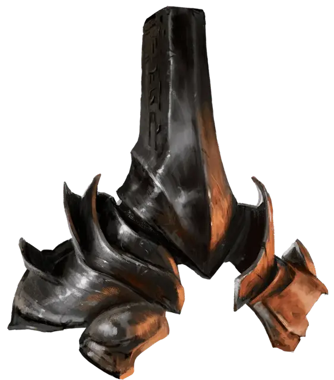

Шлем командования дьяволами
Helm of Devil Command
Чудесный предмет, очень редкий (требуется настройка существом, говорящем на Инфернальном языке)

Рекомендованная стоимость 5 001-50 000 зм
Этот громоздкий, шлем без глазниц создан для исчадия преисподней [pit fiend], но магическим образом изменяется, чтобы соответствовать головам других владельцев.
Когда вы носите шлем, вы можете видеть из него, как если бы вы его не носили. Кроме того, вы знаете точное местоположение и тип всех дьяволов в радиусе 1000 футов от вас. Вы можете телепатически общаться с дьяволом в пределах досягаемости, или транслировать свои мысли всем дьяволам в пределах досягаемости. Дьяволы, принимающие ваши транслируемые мысли, не имеют возможности ответить вам.
Шлем имеет 3 заряда. Действием вы можете потратить 1 заряд, чтобы наложить подчинение чудовища [dominate monster] (Сл спасброска 21), который воздействует только на дьяволов. (Заклинание не срабатывает, и заряд тратится впустую, если вы нацеливаетесь на любое существо, не являющееся дьяволом.) Если дьявол видит вас, когда вы накладываете на него это заклинание, то он знает, что вы пытались его околдовать. Шлем восстанавливает все свои заряды спустя 24 часа после того, как был израсходован последний заряд.
Если вы не дьявол, то использование свойства шлема для накладывания подчинение чудовища в Девяти Преисподних имеет 20-процентный шанс привлечь нарзугона [narzugon], который прибывает на спине кошмара [nightmare] через 1к4 часов. Нарзугон пытается вернуть шлем, убивая вас, если это необходимо. Если он получает шлем, то пытается доставить его своему дьявольскому хозяину.